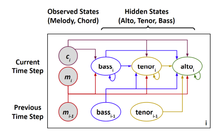
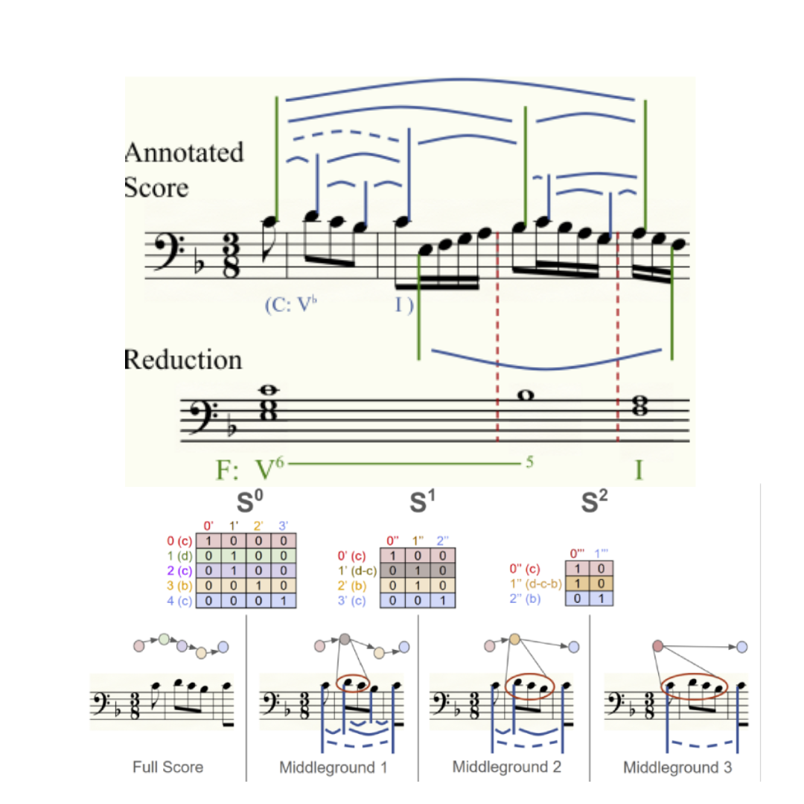
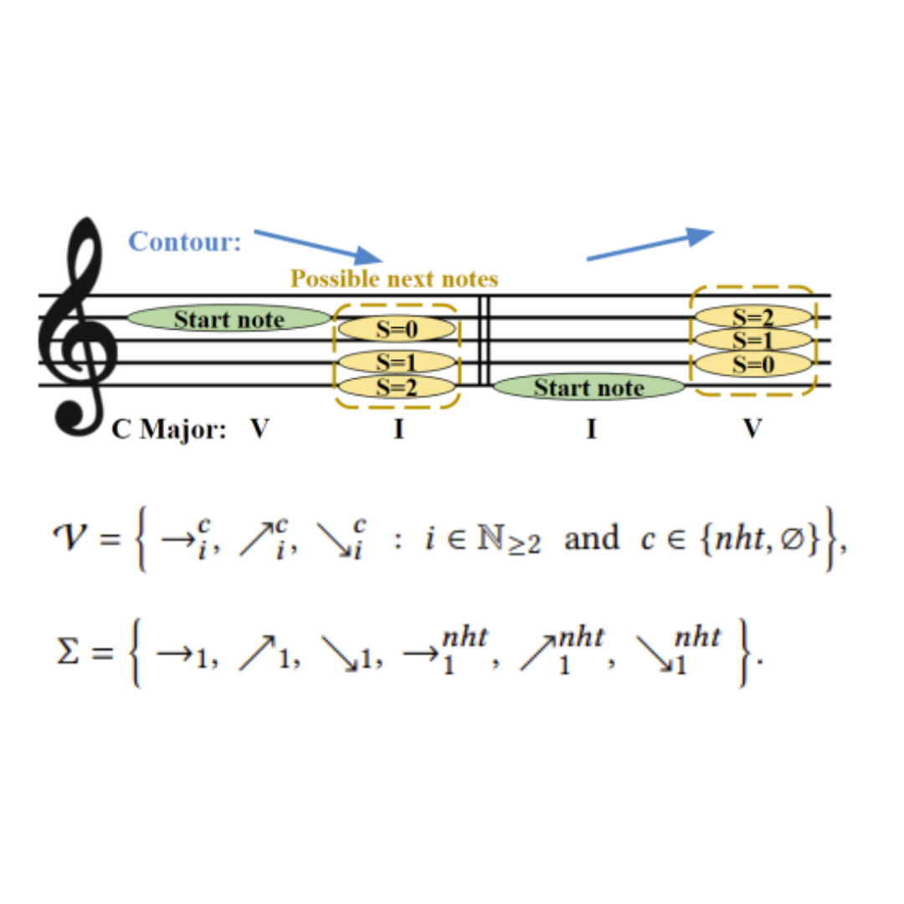
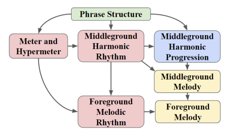
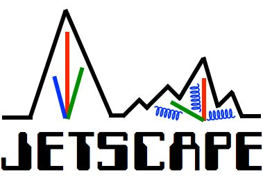
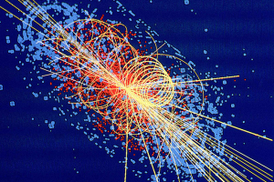
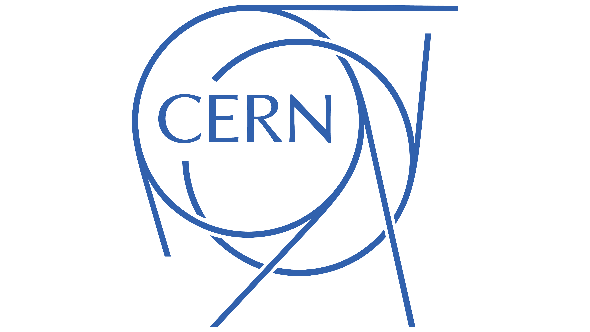

|
Rico Zhu I am an undergraduate student at Duke University, double majoring in Computer Science and Math, currently working under Prof. Cynthia Rudin. My research is broadly focused on interpretable generative models, previously in the domain of music composition, and currently in the domain of physics discovery. I am fortunate to also work with Prof. Simon Mak as part of the JETSCAPE high-energy physics (HEP) collaboration, Prof. Yue Jiang as part of the Interpretable ML Lab, and Prof. Rong Ge. My given name is Yifan Zhu, but I have gone by Rico since about when I was 10, and is my preferred name. Email / CV / Google Scholar / Github |

|
Research InterestsMy interests broadly span applications of interpretable ML for science discovery, with an emphasis in the high-energy physics (HEP) domain. I am currently interested in using methods from geometric deep learning to design more interpretable, and more realistic generative models for scientific emulation. |
Publications |
|

|
SentHYMNent: An Interpretable and Sentiment-Driven Model for Algorithmic Melody Harmonization
Stephen Hahn, Jerry Yin, Rico Zhu, Weihan Xu, Yue Jiang, Simon Mak, Cynthia Rudin KDD, 2024 Current music harmonization models fail to compose with affect, and those which do are uninterpretable. We propose a novel affective embedding and sentiment representation in tandem with an efficient, interpretable generative model. |
|

|
A New Dataset, Notation Software, and Representation for Computational Schenkerian Analysis
Stephen Ni-Hahn, Weihan Xu, Jerry Yin, Rico Zhu, Simon Mak, Yue Jiang, Cynthia Rudin ISMIR, 2024 Music theory is well understood under the framework of Schenkerian Analysis, a hierarchical approach to harmonic analysis. We propose a novel graph-based formulation of this task. |
|

|
An Interpretable, Flexible, and Interactive Probabilistic Framework for Melody Generation
Stephen Hahn, Rico Zhu, Simon Mak, Cynthia Rudin, Yue Jiang KDD, 2023 A novel generative framework for music composition that is architecturally compatible with music theory, making the generation process easily interpretable for music experts. |
Demos |
|

|
New Orleans: An Adventure in Music
Stepehn Hahn, Rico Zhu, Jerry Yin, Simon Mak, Yue Jiang, Cynthia Rudin NeurIPS Creative AI Track, 2023 How can we generate music affectively? In this demo set in the city of New Orleans, we present a music generation model which uses mixtures to compose with emotion. |
Research Experience |
|

|
JETSCAPE Collaboration
Joint collaboration with Lawrence Berkeley National Lab, with Prof. Simon Mak January 2024 - Present Developing Lorentz-group invariant generative model for emulating particle collision events. Designed a general software framework for performing closure tests to verify experiment results. |
|

|
Interpretable Machine Learning Lab
With Prof. Cynthia Rudin, Simon Mak, and Yue Jiang December 2022 - Present Interpretable generative models for music composition, with a focus on designing models with built-in interpretability under the Schenkerian music theory framework. |
|

|
CERN, Student Research Intern
With the Duke HEP Group May 2022 - September 2022 Documentation Page / Gitlab Repository With the ATLAS Collaboration, worked on using GNNs to model collider geometry for jet reconstruction as an alternative to the costly Particle Flow algorithm. |
Teaching Experience |
|
Head Teaching Assistant, CS 201 Spring 2023, Fall 2024
Teaching Assistant, CS 201 Fall 2022, Spring 2022, Fall 2023; CS 330 Spring 2024, Fall 2024 |
|
Souce code and website design from Jon Barron. |